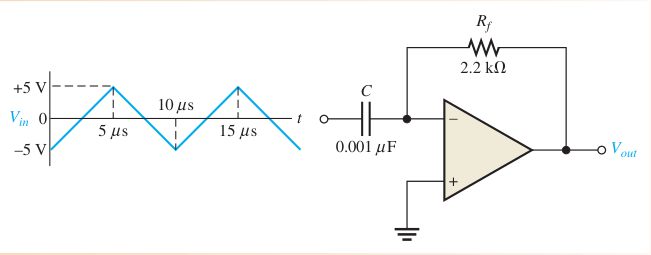

R = 10 kΩ, C = 10 μF: ∓50 V/s → triangle from 0 to −0.5 V
📖 Explanation for beginners
The one-line formula ΔV/Δt = −Vin/RC covers every simple integrator problem.
Part 3 · Book examples
Differentiator (Floyd Problem 18)

Floyd Fig. 13–40
Example · Floyd Problem 18
Slope 4000 V/s, RfC = 0.705 ms → ±2.82 V (square wave)
📖 Explanation for beginners
Compute the slope of one half-period first, then multiply by RfC.
PART 4/5
04
Common pitfalls
Open/short faults
Sign of VOUT
Practical limits
Part 4 · Pitfalls and extensions
Typical faults
Fault
Symptom
Rf hở (mạch cộng)
Open loop → saturation
One Ri open
That input’s contribution disappears
C open (integrator)
No integration: gain-like behaviour or saturation
📖 Explanation for beginners
Ask first: is the feedback path intact? Then check each input resistor.
Part 4 · Pitfalls and extensions
The sign trap
Sign of the voltageSumming, integrating and differentiating circuits all invert. “Increase/decrease” of a negative output is ambiguous: state the magnitude |VOUT|.
📖 Explanation for beginners
This is why some book Circuit-Action items were replaced by versions that state the magnitude.
Part 4 · Pitfalls and extensions
Practical limits
A comparator is also limited by slew rate and delay
Practical integrators/differentiators only work over a frequency band
Even a small offset accumulates in long-term integration
📖 Explanation for beginners
Ideal models are enough for exams; real designs need the extra protective resistors.
Part 4 · Pitfalls and extensions
Bias compensation for the summer
Compensation
Rc = Rf ‖ R₁ ‖ R₂ ‖ … ‖ Rₙ
Placed at the (+) input to cancel the bias-current error.
📖 Explanation for beginners
The compensating resistor equals the parallel combination of every resistor at the (−) node.
PART 5/5
05
Applications and summary
Hysteresis alarms (illustrative)
Formula table
Self-check
Part 5 · Applications and summary
Signal-processing applications on aircraft
Illustrative: a hysteresis comparator turns an analog sensor signal into an on/off warning (e.g. a temperature threshold) without chatter from noise
Illustrative: a summer mixes several sensor signals into one
Illustrative: an integrator turns a rate signal into an angle
📖 Explanation for beginners
Examples only illustrate the principle, not a specific system.
Part 5 · Applications and summary
Chapter 13 formula table
Circuit
Formula
VUTP / VLTP
R₂/(R₁+R₂)·(±Vout(max))
VHYS
VUTP − VLTP
Adder
−(Rf/Ri)ΣV
Scaling
−Σ(Rf/Rk)Vk
Integrator
ΔVout/Δt = −Vin/(Ri·C)
Differentiator
Vout = −Rf·C·ΔVin/Δt
📖 Explanation for beginners
These six formulas solve almost every exercise in the chapter.
Part 5 · Applications and summary
Quick self-check
Compute VUTP for R1 = 33 kΩ, R2 = 18 kΩ, Vout(max) = ±11 V → 3.88 V
Floyd §13–3: integrator and differentiator (ideal and practical). §13–4: troubleshooting.
See also Jaeger 5e Ch.10 §10.9–10.10 and Ch.12 §12.8–12.9 per the syllabus map (no page-level quotes).
2. Five worked examples
Example · Example 1 – Hysteresis (Problem 3)
VUTP = 2.77 V, VHYS = 5.54 V
Example · Example 2 – Summer (Problem 9b)
VOUT = −2.2 × 1.6 = −3.52 V
Example · Example 3 – Scaling adder (Problem 13)
VOUT = −3.572 V
Example · Example 4 – Integrator (Problem 15)
−4.06 V/ms
Example · Example 5 – Differentiator (Problem 18)
±2.82 V square wave
3. History and theory context
Integration and differentiation were the operations of analog computers; the summer provides addition. Together they solve differential equations with voltages, a precursor of automatic control.
4. Aircraft case study (illustrative)
Illustrative: integrating a rate signal into an angle, and a hysteresis comparator for threshold warnings. A principle example, not a specific system.
5. Exam pitfalls
Dropping the inversion sign.
Swapping Rf/Ri and Ri/Rf for weights.
Forgetting the factor 2 in VHYS = 2·VUTP.
Using the full period instead of a half period for the slope in differentiator problems.